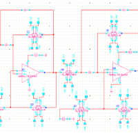

Hemanth Sabbella (Sai Hemanth Reddy Sabbella)
Namaste!
I am Hemanth Sabbella. I graduated from IIIT-Delhi in Electronics and Communications engineering and am currently working as research assistant in Indian Institute of Science(IISc). I work on hardware with specialisation in embedded electronics, digital and analog circuits, and VLSI. Unlike conventional electronics engineers, I code as well. I don't restrict myself to a specific field, but rather I am quite flexible about integrating my expertise into interdisciplinary fields. I am particularly interested in fusing electronics in biomedical and bio-inspired systems. Apart from the above, I click good pictures, dance, play guitar at times and eat a variety of food.
Experience
Research Assistant
- Dhvani v1.0: Circuit designing and FPGA design of low-cost, portable, super-resolution ultrasound imaging system
- UDR-ADC: Hardware prototype design of a novel unlimited dynamic range(UDR) ADC Publication: [arXiv preprint arXiv:1911.09371]
- Voltage induced synthesis of metal(Au, Ag) nanoparticles and it's effects Patent: [Complete Indian patent filed: 201941043597]
- Venom v1.0: Prototype of detecting venom of different species using gold nanoparticles in human blood
- AirCheck v1.0: Prototype of air quality monitoring system - PM2.5, 10, CO2

Associate Consultant
- Analysing Wipro Holmes bots which are Machine Learning based, and identify the test cases in them. Also, configuring the bots according to the usability in T-Mobile, Poland account of Wipro.
- Crowdsourcing projects: A VLSI project on designing an 8 - bit ALU in Verilog and generating the test cases for the same. Alongside, a Perl scripting[certified by Udemy] project on automation cases which is indeed useful in scripting on EDA tools.
Undergrad Researcher
Developed an Electromagnetic interference(EMI) sensor - a non-invasive, wide-band, current transformer based sensor with a low noise amplifier on Eagle CAD. Experimented in collecting EMI traces of different appliances for smart segregation of appliances in households. This work is done under the guidance of Manoj Gulati, PhD student.
Education
IIITD - Indraprastha Institute of Information Technology, Delhi
GPA: 7.14/10
Sri Chaitanya College(KKR campus), Vijayawada
Percentage: 96.6%
Bhashyam Public School, Tanuku
Percentage: 93%
Skills
Verilog, Perl Scripting, Python, C, Embedded C.
Eagle CAD, Cadence - Virtuoso, Encounter, Synopsys - Design Compiler, Primetime, LTspice, Tina, Matlab, Raspberry Pi 3, FPGA(Basys 2), NI USRP(2920, 2922), NI DAQ(6009), 3D printing and modeling(Prusa i3 and LBD makers) and good laboratory skills..
Analog CMOS, VLSI design flow, Digital Signal Processing, Mixed Signal Design, Linear Circuits, Integrated Electronics, Embedded Logic Design, System on Chip - Design and Test, Smart sensing in Internet of Things
Academic projects

- EMI Sensing Board - Design and Fabrication of EMI sensing board using current transformer with a low noise amplifier[Research project].
- Constant Current LED driver board: Design and Fabrication of constant current LED board for testing portable spectrometer.
- IIITDuino: Design of in-home version of Arduino for IIITD with is compatible with the electronics courses.
- Breakout Boards and custom made libraries: Mux - ADG736, ADG719, LEDs - 1316, L424, LHT674, OSI-330 series, VS.

Special mentions
→ Winner, Hackware - 2019, A Schneider Electric innovation challenge[C]
→ Established Dexter's Lab - an Electronics makerspace in IIITD with Electroholics Admins and mentors
→ NOTE: Stand-out applicant and participant, MIT hacking medicine, Grand Hack - 2019 hosted by University of California, San Francisco [Pitch]
→ Co-founder and Coordinator, 2015-16
→ Student Coordinator and Volunteer
![[p]](https://github.com/HemanthSabbella/HemanthSabbella.github.io/blob/master/img/Circuitrix'15.jpg){kind=link}
→ Mentor, HackIIITD & Circuitrix Jr(`16)
→ Organiser, Circuitrix Jr(`15)
→ Content writer - Recent Innovations
→ Graphic Designer
![[c]](https://github.com/HemanthSabbella/HemanthSabbella.github.io/blob/master/img/NGO_CommunityWork.jpg){kind=link}
→ Volunteered for educating Delhi slum children in Summer-2017.
→ Basics of PCB Designing
→ Reading science alert blogs, capturing through lens(featured on natgeotravelerindia), playing guitar, western dancing and watching captivating TV shows and movies.